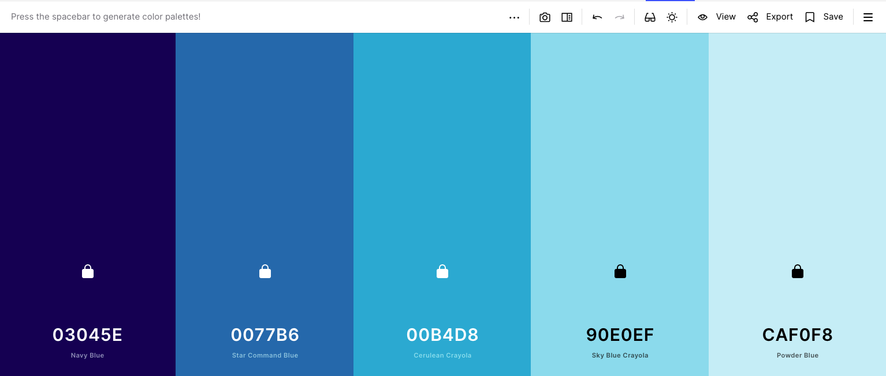
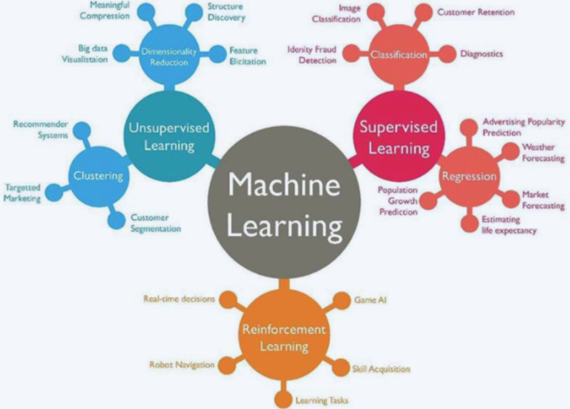
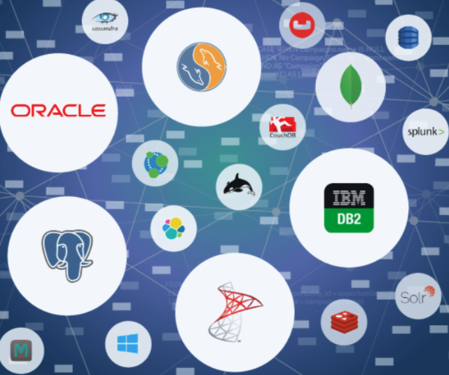
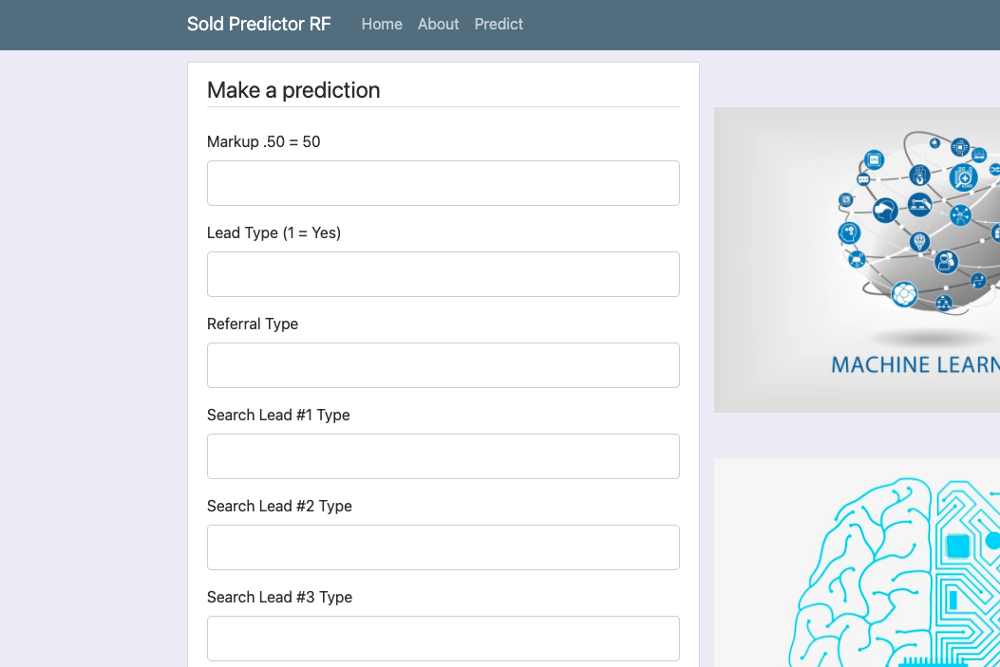
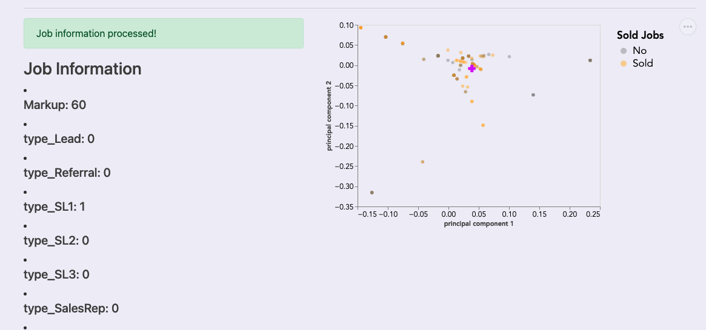
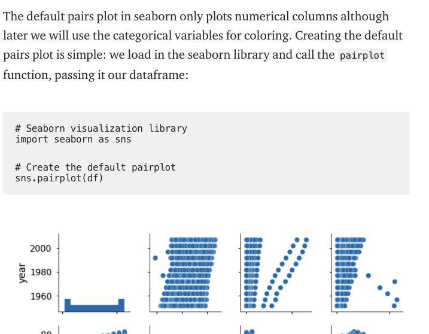

Overview
Purpose
Is your data making you money? When data creates a competitive advantage, one needs the right tools and applications to create an unbeatable edge. In these times, the issue isn’t about if we have enough data but how to turn all that data into insights and afterwards take action. As one Amazon Employee put it, “He who has the data, is king.” Come learn here on this website with me on how to leverage your data to make you money!
Audience
The intended audience is companies or people looking for custom expert-level solutions for complex business data problems. If you are a CEO of a Bank, VP of Finance, and or Marketing and you're trying to figure out which of your customers will apply for a subscription, Data Science can solve that for you!. If you are an owner of a Real Estate Firm and you want to custom build a predictive home price system for homebuyers then Data Science can do that for you. If you are a Bike Rental Company and you want to predict how many bikes will be rented in one day then Data Science can do that for you. If you're a pizza restaurant owner and you want to see how you can increase pizza-making time then Data Science can do that for you. No matter where you are in the spectrum of analyzing or predicting we can help you!
Branding
Website Logo
Style Guide
Color Palette
Palette URL: https://coolors.co/03045e-0077b6-00b4d8-90e0ef-caf0f8 | Primary | Secondary | Accent 1 | Accent 2 |
|---|---|---|---|
| [#03045E] | [#0077B6] | [#00B4D8] | [#90E0EF] |
Typography
Heading Font: Dekko
The reason why I want to use this is first I'm using it as a headline font for the white water rafting website and I really like it but the other reason is because I want this website to reflect like a blog and I want people to feel like this is journey.
Paragraph Font: Actor
I'm choosing this font because I think the font is kind of like the font of writing in the terminal command line on the computer.
Normal paragraph example
The industry is using a lot of Xgboost, Random Forest, and Neural Networks Algorithms to do A.I., Machine Learning, and Deep Learning. All great algorithms but it's not like one algorithm trumps the other.
Colored paragraph example
The length of the projects vary between 3 months, 6 months, and 1 year. If you want to regulary contract us then we can set up a regular subscription plan.
Navigation
Site Map
Content
Home page
Images for the Home page
- 
- 
Machine Learning API
- -Jobs Sold ML API Service section: Simple API Service that let's you send new instances of jobs against my random forest model built in scikit-learn. The exact price of the job cannot be inputed because it throws off the prediciton. Thus, the price of the job had to be separated into groups. It's all about getting the right of markup within a certain job cost.
- -Endpoints section: / or /about - shows info about the api service, /isAlive - shows "Yessir!" if service is up and running, predictapi - api where you send params of a new job instance and it returns a prediction
- -Example section: here's an example how the url request will look like http://localhost:1001/predict?markup=.2&type_NotFromClustGroup=1&type_76000_plus=1&type_Referral=1
Images for the Page 2
- 
- 
My Blog
This page contains everything that I've been learning at my job and side projects and how I've been applying data science in those spaces.
Images for the Page 3
- 